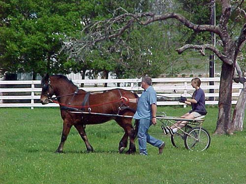
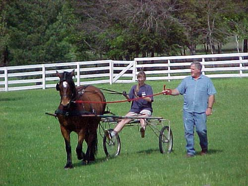
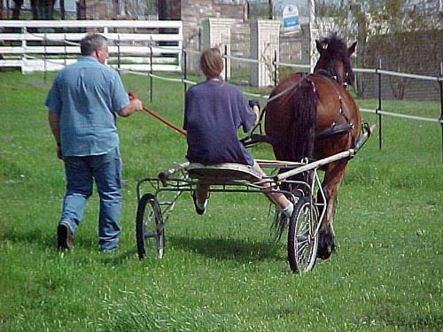
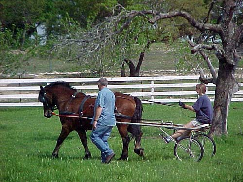
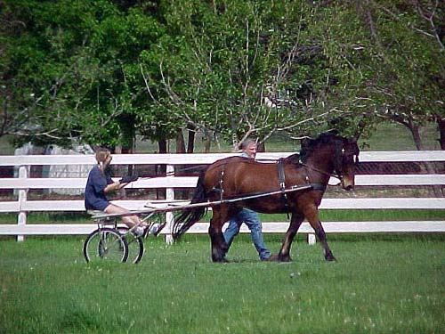
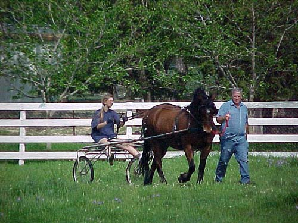
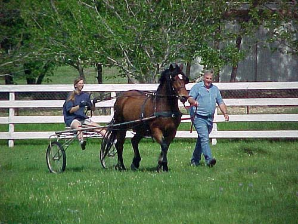

Our first time driving with a cart
|  | Ken Williams came out and we harnessed Thuy up and hooked up Donna's
training cart. It was a windy day and Adamir was galloping around in the
other pasture, but Thuy wasn't too bothered.
Ken hopped in the cart and drove him around. Thuy got used to pulling more weight than a tire, and the breeching when he'd head downhill (he'd start trotting, and Ken would bring him back to a walk). |
|
Thuy didn't really like turning to the left. When I ride,
he tends to pop his right shoulder and not go left, but side pass out on
the circle or corner. With driving, he couldn't do that. The shafts and
cart won't allow him to side pass to the right when we're turning left.
With Ken he would act up a bit and start to trot. By the time I got in
the cart he had given up, and was turning normally both directions. Ken
said it helped that I knew his mouth and he knew my hands better.
|
 |
|  | I don't think Ken felt it was necessary for him to hold onto the lead line, but after all that I've read, it made me feel better. |
|
Thuy only got strong with me a few times. Once was when
I turned him downhill (the breeching, I guess). The other time was when
the F16s flew overhead in formation (I didn't see, but my husband did).
Thuy just tried breaking into a trot. I talked to him and was able to bring
him back.
I have to say that I can't wait to trot. It felt like driving a little sports car... |
 |
|  | Not to belittle your cart, Donna, but Ken is already telling me to find a 'real' cart. I have to say that I love being able to brace my feet and keep my hands steady on his mouth. Ground driving sure will come up lacking after this. |
|
Ken's suggesting that I get out on the road, sooner instead
of later. Thuy is completely road-safe as a riding horse, and Ken seems
concerned that he'll get bored with a lot of pasture work and going around
in circles.
After saying that, Ken doesn't suggest that I just go out on the road alone. He's also a little concerned with my simple snaffle as a driving bit. Thuy can get strong, but I've never had a problem with control with the snaffle. Still, when my trainer put beginners on him, she used a Kimberwick to get his attention. So, I'm probably in the market for a nice driving bit with shanks and a curb chain (I figure I can always drive all the way up if I want the snaffle action) |
 |
|  | Every once in a while the head went up and the ears pointed forward,
looking around.
Still, he was absolutely wonderful for his first time putting to. Also, my fear that he wouldn't stand and would jig when I'd ask him to halt seems to be unfounded. He stopped whenever asked, and stood while we'd talk. I thought it would be ok, because after his third time ground driving he'd begun to stand for me whenever I'd ask him to. |
(thanks also to everyone at the Sunrise
Ridge CDE who asked me if Thuy'd ever been driven - you got me thinking)
And, now I can say Yes!